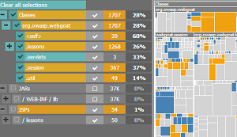
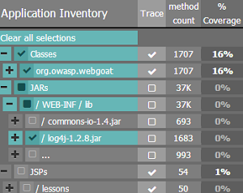
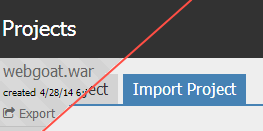

Code Pulse is a free real-time code coverage tool for penetration testing activities
Download Code PulseVersion 1.0How it works
- Download & run Code Pulse
- Point Code Pulse at your app bundle
- Configure your app for monitoring
- Monitor code coverage in real-time!

Are you using automated penetration testing tools? Monitor and compare their coverage. Visually understand where there were coverage overlaps and where there weren't any.
Export your coverage activity and share it with others so they can easily understand which parts of the application were covered in testing.
Why Code Pulse?
A continuous challenge facing penetration testers is ensuring adequate coverage of a target application. A purely black box perspective makes it almost impossible to accurately identify how much of the attack surface was tested for penetration during assessment.
Code Pulse is a glass box tool that provides insight into the real-time code coverage of penetration testing activities. Code Pulse automatically detects coverage information while the tests are being conducted and will even make it possible to understand the overlaps and boundaries of the different tools coverage.
Code Pulse presents coverage information in a visual form to make it easy to understand at-a-glance which parts of an application have been covered and how much. The real-time coverage feedback makes it easy to adjust testing activity based on the observed coverage. In addition, for testing activities relying on multiple techniques (a variety of dynamic analysis tools for instance) it's easy to split up the recorded activity to understand which code was covered by each tool independently or alternatively to view coverage overlaps between multiple tools.
Even if you visited a page, you may not have triggered certain critical code paths. See exactly what methods were called during your testing.
There are a lot of unknowns when using active scanners. Use Code Pulse as you let your scanners loose on the application and understand where the scan shortcomings were as you fine-tune the testing tool configuration.
Features
Real-time insight
See what code is called in real-time as a result of your testing activities
Works with any testing tool
Code Pulse is testing-tool agnostic and will happily continue to give you coverage information regardless of which tool you're using
Separate Recordings
Code Pulse gives you the tools to identify coverage activity based on what you were doing at the time

Detailed coverage information
See coverage information from a high level view all the way down to individual methods

Visualizations
See code coverage in a single at-a-glance visualization

Application Inventory
Understand the structure and dependencies of the monitored application right from the Code Pulse interface
Multi-session traces
No need to worry about doing your testing activity in one session; with Code Pulse you can spread your testing over many sessions and still get coverage data
Share/Export
Export your coverage information and share it easily with other people
